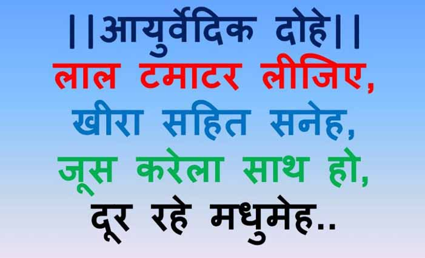

आयुर्वेदिक दोहे--------
_____________________________________________________
1.जहाँ कहीं भी आपको,काँटा कोइ लग जाय। दूधी पीस लगाइये, काँटा बाहर आय।।
2.मिश्री कत्था तनिक सा,चूसें मुँह में डाल। मुँह में छाले हों अगर,दूर होंय
तत्काल।।
3.पौदीना औ इलायची, लीजै दो-दो ग्राम। खायें उसे उबाल कर, उल्टी से आराम।।
4.छिलका लेंय इलायची,दो या तीन गिराम। सिर दर्द मुँह सूजना, लगा होय आराम।।
5.अण्डी पत्ता वृंत पर, चुना तनिक मिलाय। बार-बार तिल पर घिसे,तिल बाहर आ
जाय।।
6.गाजर का रस पीजिये, आवश्कतानुसार। सभी जगह उपलब्ध यह,दूर करे अतिसार।।
7.खट्टा दामिड़ रस, दही,गाजर शाक पकाय। दूर करेगा अर्श को,जो भी इसको खाय।।
8.रस अनार की कली का,नाक बूँद दो डाल। खून बहे जो नाक से, बंद होय तत्काल।।
9.भून मुनक्का शुद्ध घी,सैंधा नमक मिलाय। चक्कर आना बंद हों,जो भी इसको खाय।।
10.मूली की शाखों का रस,ले निकाल सौ ग्राम। तीन बार दिन में पियें, पथरी से
आराम।।
11.दो चम्मच रस प्याज की,मिश्री सँग पी जाय। पथरी केवल बीस दिन,में गल बाहर
जाय।।
12.आधा कप अंगूर रस, केसर जरा मिलाय। पथरी से आराम हो, रोगी प्रतिदिन खाय।।
13.सदा करेला रस पिये,सुबहा हो औ शाम। दो चम्मच की मात्रा, पथरी से आराम।।
14.एक डेढ़ अनुपात कप, पालक रस चौलाइ। चीनी सँग लें बीस दिन,पथरी दे न दिखाइ।।
15.खीरे का रस लीजिये,कुछ दिन तीस ग्राम। लगातार सेवन करें, पथरी से आराम।।
16.बैगन भुर्ता बीज बिन,पन्द्रह दिन गर खाय। गल-गल करके आपकी,पथरी बाहर आय।।
17.लेकर कुलथी दाल को,पतली मगर बनाय। इसको नियमित खाय तो,पथरी बाहर आय।।
18.दामिड़(अनार) छिलका सुखाकर,पीसे चूर बनाय। सुबह-शाम जल डाल कम, पी मुँह
बदबू जाय।।
19. चूना घी और शहद को, ले सम भाग मिलाय। बिच्छू को विष दूर हो, इसको यदि
लगाय।।
20. गरम नीर को कीजिये, उसमें शहद मिलाय। तीन बार दिन लीजिये, तो जुकाम मिट
जाय।।
21. अदरक रस मधु(शहद) भाग सम, करें अगर उपयोग। दूर आपसे होयगा, कफ औ खाँसी
रोग।।
22. ताजे तुलसी-पत्र का, पीजे रस दस ग्राम। पेट दर्द से पायँगे, कुछ पल का
आराम।।
23.बहुत सहज उपचार है, यदि आग जल जाय। मींगी पीस कपास की, फौरन जले लगाय।।
24.रुई जलाकर भस्म कर, वहाँ करें भुरकाव। जल्दी ही आराम हो, होय जहाँ पर घाव।।
25.नीम-पत्र के चूर्ण मैं, अजवायन इक ग्राम। गुण संग पीजै पेट के, कीड़ों से
आराम।।
26.दो-दो चम्मच शहद औ, रस ले नीम का पात। रोग पीलिया दूर हो, उठे पिये जो
प्रात।।
27.मिश्री के संग पीजिये, रस ये पत्ते नीम। पेंचिश के ये रोग में, काम न कोई
हकीम।।
28.हरड बहेडा आँवला चौथी नीम गिलोय, पंचम जीरा डालकर सुमिरन काया होय॥
29.सावन में गुड खावै, सो मौहर बराबर पावै॥